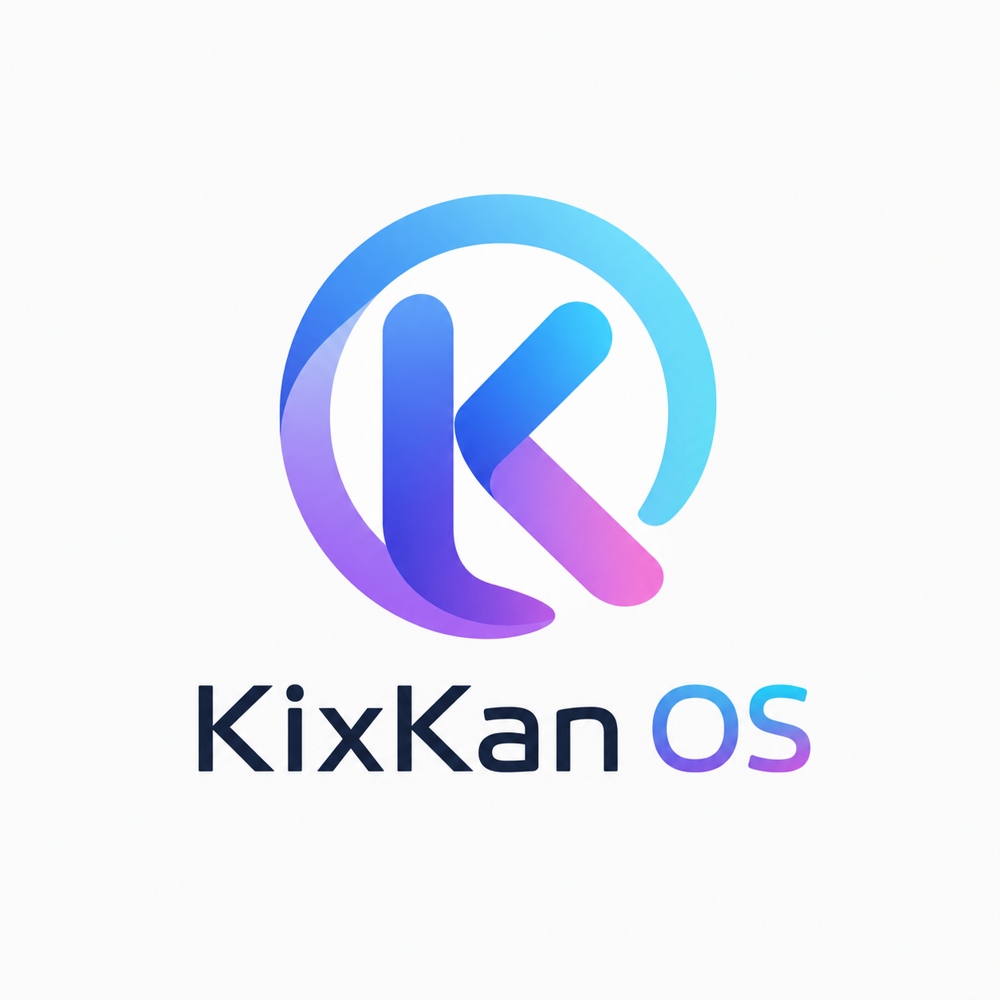

KixKanBrowser
--:--Local time
PRIVATE BY DEFAULT · READY TO EXPLORE
The web, with
less noise.
Search without a KixKan account, hidden telemetry, or a personalized advertising profile.

PRIVATE BY DEFAULT · READY TO EXPLORE
Search without a KixKan account, hidden telemetry, or a personalized advertising profile.